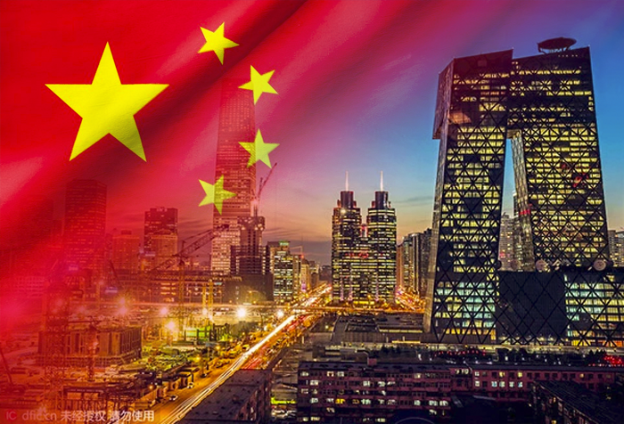

ประเทศจีน中国

เป็นอารยธรรมที่ยาวนานกว่า 5,000 ปี แบ่งเป็นยุคสมัยสำคัญได้แก่ ยุคโบราณ
(ราชวงศ์เซี่ย, ซาง, โจว)ซึ่งเป็นรากฐานอารยธรรมและปรัชญาขงจื๊อ, ยุคจักรวรรดิ (ราชวงศ์ฉิน-ชิง)
ที่มีการรวบรวมแผ่นดินและพัฒนาการที่ยิ่งใหญ่
เช่น กำแพงเมืองจีน, และ ยุคสมัยใหม่ (หลังราชวงศ์ชิงจนถึงปัจจุบัน)
ที่มีทั้งความแตกแยก สงครามกลางเมือง และการก่อตั้งสาธารณรัฐประชาชนจีนจนก้าวสู่การเป็นมหาอำนาจ